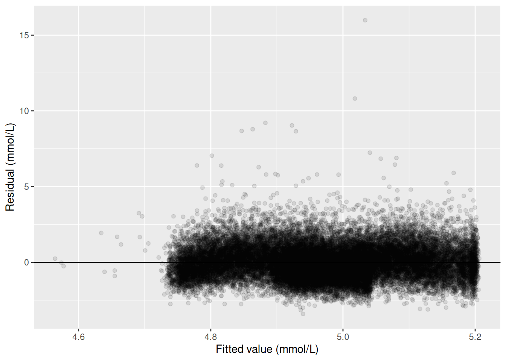
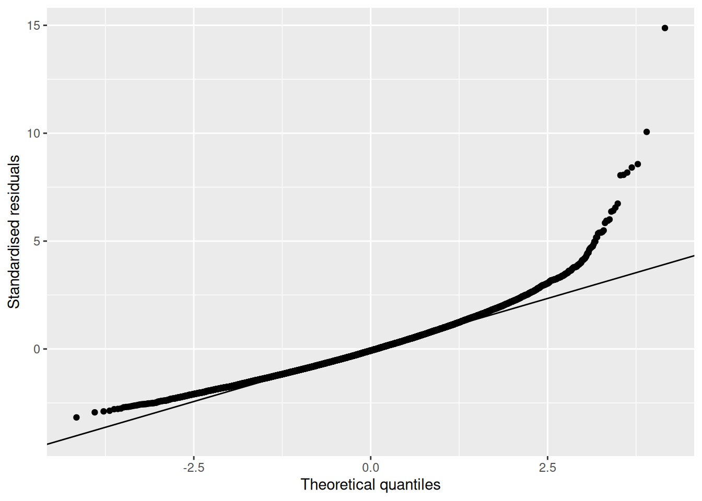

library(readr)
library(dplyr)
library(ggplot2)
library(gtsummary)
library(here)
library(broom)
nhanes <- read_csv(here("data", "mph_nhanes_20241107.csv"))
dictionary <- read_csv(here("data", "mph_nhanes_20241107_dictionary.csv"))7 Multiple linear and logistic regression (Week 11)
This chapter extends Week 10’s simple regression into a multivariable one, so an association can be adjusted for confounding, the epidemiology half’s own treatment of bias applied inside a regression model. We interpret an adjusted coefficient, and read a categorical predictor’s contrasts against a reference level. We then swap a continuous outcome for a binary one, fit a logistic regression instead of a linear one, and turn an exponentiated coefficient into an adjusted odds ratio. blm.cvd closes the chapter as a case the data cannot settle either way, a confounder or a mediator, reported both ways as a sensitivity analysis rather than resolved. In this chapter we fit all of that in R.
7.1 Chapter intended learning outcomes
By the end of this chapter you will be able to:
- Derive a fixed-window binary outcome from an event indicator and a follow-up time, and justify the exclusion rule it requires
- Fit a multivariable linear regression, including categorical predictors with a stated reference level
- Compare crude and adjusted estimates and quantify the change
- Fit a logistic regression with
glm(family = binomial), and interpret an exponentiated coefficient as an adjusted odds ratio with a confidence interval - Compare nested models as a sensitivity analysis
- Write an interpretation of an adjusted association suitable for a results section
7.2 Setup
As in Weeks 7 to 10, we read the data with read_csv() and turn the six coded variables into factors against the dictionary.
This chapter adds one new package underneath the scenes: gtsummary’s tbl_regression(), which we use for the first time here, depends on broom.helpers. If broom.helpers isn’t already on your machine, run install.packages("broom.helpers") once in the console, not inside this document. We don’t library() it directly; gtsummary finds it automatically once it’s installed.
nhanes <- nhanes |>
mutate(
gender = factor(gender,
levels = c(1, 2),
labels = c("Male", "Female")),
eth = factor(eth,
levels = c(1, 2, 3, 4, 5),
labels = c("Mexican American", "Other Hispanic", "White", "Black", "Others")),
edu = factor(edu,
levels = c(1, 2, 3),
labels = c("Less than high school", "High school graduate", "Above high school")),
smoking = factor(smoking,
levels = c("Never", "Previous", "Current")),
phq.c = factor(phq.c,
levels = c("0 Normal", "1 Mild symptoms", "2 Possible depression"),
labels = c("Normal", "Mild symptoms", "Possible depression"),
ordered = TRUE),
blm.cvd = factor(blm.cvd,
levels = c(0, 1),
labels = c("No", "Yes"))
)This is the same recode we introduced in Week 7 and repeated in Weeks 8 to 10. See Week 7 for the reasoning behind each variable.
7.3 Opening exercise: building a ten-year mortality outcome
nhanes_mph records whether each participant died during follow-up (dth: 1=died; 0=alive) and how long they were followed for (fu_month, in months). Neither column on its own answers the question this chapter needs: did a participant die within ten years? “Died” isn’t a question we can answer until we say “by when.”
Three groups exist in this data:
- Participants who died, and whose death happened within 120 months (10 years) of their follow-up starting. These count as an event:
1. - Participants known to be alive at 120 months. This includes everyone followed at least that long without dying, but it also includes anyone who died after 120 months: surviving to month 150 and then dying still means they were alive at month 120, so this group counts as a non-event:
0, regardless of whether death eventually happened later on. - Participants who did not die, but whose recorded follow-up ended before 120 months. These cannot be classified either way. They might have died the month after their follow-up ended, or lived another thirty years. Calling them “survivors” would be a guess, so they are excluded rather than coded as
0.
Two tools do the work, and both are new. case_when(), from dplyr, checks a series of conditions in order and returns the first matching value, which is exactly what a three-way rule needs. Each line pairs a condition on the left of the ~ with the value to return on the right, and the last line is usually a catch-all: TRUE is a condition that is always met, so anything reaching it without matching a line above gets whatever that line returns. Order matters, because case_when() stops at the first condition a participant matches. The second tool is an argument rather than a function. table() normally leaves missing values out of its count, the way it did in Week 7; useNA = "always" tells it to report them as their own category instead, which is what we want here, since the participants we exclude are the point rather than a footnote.
ImportantYour turn, before you read on
Exercise (ILO 1). Write the mutate() yourself. Using case_when(), build a new column called dead_10yr in nhanes that returns 1 for the first group above, 0 for the second, and NA for the third, then count the three groups with table(nhanes$dead_10yr, useNA = "always").
Two things to work out as you write it, which matter more than the syntax:
- The rule for the second group needs no mention of
dthat all. Why not? Think about who is in that group. - Once you have the counts, be ready to say why the third group can’t simply be added to the
0s and called survivors.
Have a go before opening the answer. Everything after this section runs on the column you’re about to build, so it’s worth getting your hands on it rather than reading someone else’s version of it.
NoteAnswer: building
dead_10yr
nhanes <- nhanes |>
mutate(
dead_10yr = case_when(
dth == 1 & fu_month <= 120 ~ 1,
fu_month >= 120 ~ 0,
TRUE ~ NA
)
)
table(nhanes$dead_10yr, useNA = "always")
0 1 <NA>
14275 3748 23742 The second condition is written as fu_month >= 120 alone, with no condition on dth, precisely to catch both parts of that second group: dth == 1 (died, but after month 120) and dth == 0 (never died, followed at least that long) both belong in it. Anyone who was still being observed at month 120 was alive at month 120, and that is the whole question.
The catch-all comes last and returns NA. That’s the third group: alive, but followed for less than ten years. Had it been written first, it would have swallowed everybody.
3,748 participants died within the ten-year window, 14,275 are known to have been alive at ten years (whether or not they later died), and 23,742 are excluded because their follow-up ended too early to classify them either way. That’s a large number excluded, but it’s the honest cost of a fixed-window outcome: we’re deliberately not using information about when someone died beyond whether it was inside or outside our chosen window, and we’re refusing to guess about the people whose observation window closed before the ten years were up. The 3,748 events that remain are plenty to fit the regression models this chapter builds.
There is a family of methods, survival analysis, built precisely to use the follow-up time we’ve just thrown away and to keep the participants we’ve just excluded. Kaplan-Meier curves and Cox regression are its familiar tools. They’re out of scope here, and Advanced Statistics is where they’re taught.
NoteTry it yourself: a different window
Rebuild dead_10yr using a five-year window (60 months) instead of ten. Report the new event and exclusion counts, and write one sentence on why a shorter window changes both numbers in the direction it does.
7.4 Extending the Week 10 model
This section asks the question Week 10 left open: once age, gender, and education are accounted for, does sedentary time still predict cholesterol? Week 10 fitted total cholesterol (chol, in mmol/L) against sedentary time alone (sed, in hours/day), chol ~ sed, and found a small, non-significant slope: it adjusted for nothing else, so it couldn’t rule out age (in years) or gender accounting for the pattern. We now add them, along with education (edu), the same way + adds any predictor to an lm() formula:
chol_adj_complete <- nhanes |>
filter(!is.na(sed), !is.na(chol), !is.na(age), !is.na(gender), !is.na(edu))
m_adj <- lm(chol ~ sed + age + gender + edu, data = chol_adj_complete)
summary(m_adj)
Call:
lm(formula = chol ~ sed + age + gender + edu, data = chol_adj_complete)
Residuals:
Min 1Q Median 3Q Max
-3.4095 -0.7426 -0.0814 0.6424 15.9864
Coefficients:
Estimate Std. Error t value Pr(>|t|)
(Intercept) 4.6614324 0.0230949 201.838 <2e-16 ***
sed -0.0011304 0.0005678 -1.991 0.0465 *
age 0.0047488 0.0003467 13.696 <2e-16 ***
genderFemale 0.1605092 0.0121807 13.177 <2e-16 ***
eduHigh school graduate -0.0130321 0.0177073 -0.736 0.4618
eduAbove high school 0.0045031 0.0149561 0.301 0.7633
---
Signif. codes: 0 '***' 0.001 '**' 0.01 '*' 0.05 '.' 0.1 ' ' 1
Residual standard error: 1.075 on 31222 degrees of freedom
Multiple R-squared: 0.01147, Adjusted R-squared: 0.01131
F-statistic: 72.43 on 5 and 31222 DF, p-value: < 2.2e-16confint(m_adj) 2.5 % 97.5 %
(Intercept) 4.616165428 4.706699e+00
sed -0.002243383 -1.741808e-05
age 0.004069176 5.428422e-03
genderFemale 0.136634488 1.843839e-01
eduHigh school graduate -0.047739058 2.167485e-02
eduAbove high school -0.024811500 3.381773e-02The coefficient on sed is now what this model calls the adjusted association between sedentary time and cholesterol: the association after holding age, gender, and education constant. “Holding constant” doesn’t mean the model repeats the analysis separately for every combination of those variables. It means the model assumes the effect of an extra hour of sedentary time is the same regardless of a participant’s age, gender, or education, and estimates that one shared slope from everybody at once.
7.5 Categorical predictors and reference levels
gender and edu entered that model as factors, and each one contributes a row per non-reference level rather than one row for the whole variable. levels(), from base R, shows a factor’s categories in order; the first one listed is the reference level, the category every other row is compared against:
levels(nhanes$edu)[1] "Less than high school" "High school graduate" "Above high school" "Less than high school" is first, so it’s already the reference we want, the same way Week 7 set it up when it built this factor for the first time. relevel(), met in Week 7 on eth and again in Week 9 on strep_tb$arm, confirms this explicitly rather than leaving it implicit:
edu_ref_check <- relevel(nhanes$edu, ref = "Less than high school")
levels(edu_ref_check)[1] "Less than high school" "High school graduate" "Above high school" Nothing changed, because "Less than high school" was already first.
Reading the coefficients table above: eduHigh school graduate compares that group to "Less than high school", holding sed, age, and gender fixed, and eduAbove high school does the same for the highest education group. Neither is statistically significant here, but the reading is the same whether or not it reaches significance: each row is a difference from the one category everything else in that variable is measured against.
The same check applies to gender:
levels(nhanes$gender)[1] "Male" "Female""Male" is first, so "Male" is the reference level and the model’s genderFemale row is the difference for females relative to males, holding sed, age, and education fixed. This isn’t alphabetical order, and it isn’t R choosing for us: it’s a direct consequence of how the setup chunk built the factor, factor(gender, levels = c(1, 2), labels = c("Male", "Female")), where the numeric code 1 was listed first and labelled "Male". Whichever label is attached to the first level named in levels = becomes the reference, so the reference level is a choice made back in the recoding step, not something to discover afterwards.
7.6 Crude versus adjusted: quantifying the change
Week 10’s crude result and this chapter’s adjusted one are worth setting side by side directly. Note that we refit the crude model here rather than reusing Week 10’s, so that both models run on chol_adj_complete, the same set of participants. That matters: if the crude model used everyone with sed and chol recorded while the adjusted one dropped anybody also missing edu, the two estimates would differ for two reasons at once, adjustment and a different sample, and we couldn’t tell which was doing the work. This is also why the crude figure below isn’t identical to the one Week 10 reported.
m_crude <- lm(chol ~ sed, data = chol_adj_complete)
tidy(m_crude, conf.int = TRUE) |> filter(term == "sed")# A tibble: 1 × 7
term estimate std.error statistic p.value conf.low conf.high
<chr> <dbl> <dbl> <dbl> <dbl> <dbl> <dbl>
1 sed -0.000738 0.000570 -1.29 0.195 -0.00186 0.000379tidy(m_adj, conf.int = TRUE) |> filter(term == "sed")# A tibble: 1 × 7
term estimate std.error statistic p.value conf.low conf.high
<chr> <dbl> <dbl> <dbl> <dbl> <dbl> <dbl>
1 sed -0.00113 0.000568 -1.99 0.0465 -0.00224 -0.0000174Crude, the slope on sed is about -0.00074 mmol/L per hour/day (95% CI -0.00186 to 0.00038, p = 0.195). Adjusted for age, gender, and education, it moves to about -0.00113 mmol/L per hour/day (95% CI -0.00224 to -0.00002, p = 0.047).
Look at the estimate first, not the p-value. The adjusted slope is about 1.5 times the size of the crude one: holding age, gender, and education constant pulls the association between sedentary time and cholesterol substantially further from zero. That movement in the estimate is what confounding looks like. Age and gender were masking part of a real association, and the model that ignores them understates it. The p-value crosses 0.05 as well, as a consequence of the estimate moving away from zero, not a separate finding.
Worth a caution about reading the other rows of this table. age’s coefficient here is adjusted for sed, along with everything else in the model, the same as sed’s own coefficient is. If sedentary time sits on the path from age to cholesterol, part of age’s true association with cholesterol runs through it, and age’s row above only captures the part that doesn’t. Treating every coefficient in a regression table as though it carried the same interpretation as the one we set out to estimate is called the Table 2 fallacy. sed is the exposure this model was built to assess, and its adjustment set was chosen with that in mind; age, gender, and edu weren’t, so their coefficients shouldn’t be read as if they were each other’s crude-versus-adjusted comparisons in miniature. This is the same logic the sensitivity analysis later in this chapter applies to blm.cvd, just stated as a general caution rather than worked through on one variable.
7.7 Diagnostics for the multivariable model
The same diagnostic plots Week 10 used still apply here, checked against the adjusted model rather than the simple one:
adj_aug <- augment(m_adj)
ggplot(adj_aug, aes(x = .fitted, y = .resid)) +
geom_point(alpha = 0.1) +
geom_hline(yintercept = 0) +
labs(x = "Fitted value (mmol/L)", y = "Residual (mmol/L)")
ggplot(adj_aug, aes(sample = .std.resid)) +
stat_qq() +
stat_qq_line() +
labs(x = "Theoretical quantiles", y = "Standardised residuals")
The same pattern Week 10 found reappears: a fairly even scatter around zero for most of the range, with a small group of participants with unusually high cholesterol pulling the upper tail away from the reference line in the QQ plot.
7.8 When the outcome is binary: logistic regression
The question for the rest of this chapter: is sedentary time associated with ten-year mortality, and does that association hold up once potential confounders are adjusted for? chol is continuous, so lm() was the right tool. But dead_10yr is 0 or 1, and should not be modelled the same way. An lm() produces a straight line, and a straight line fitted to a 0/1 outcome can predict values below 0 or above 1, which aren’t valid probabilities. glm(), base R’s function for generalised linear models (a family of regression models taught further in Advanced Statistics), fixes this by modelling the log odds of the outcome instead of the outcome directly.
We build the complete-case sample first and fit both models on it, for the same reason the linear models above shared one sample: the crude and adjusted estimates should differ because of the adjustment, not because they were calculated on different people.
dead_complete <- nhanes |>
filter(!is.na(dead_10yr), !is.na(sed), !is.na(age), !is.na(gender), !is.na(edu))Fitting one looks almost identical to fitting an lm(). The formula is the same shape, and the only addition is family = binomial, which tells glm() the outcome is binary:
m_dead_crude <- glm(dead_10yr ~ sed, data = dead_complete, family = binomial)
summary(m_dead_crude)
Call:
glm(formula = dead_10yr ~ sed, family = binomial, data = dead_complete)
Coefficients:
Estimate Std. Error z value Pr(>|z|)
(Intercept) -1.162367 0.039802 -29.204 < 2e-16 ***
sed 0.039638 0.005826 6.803 1.02e-11 ***
---
Signif. codes: 0 '***' 0.001 '**' 0.01 '*' 0.05 '.' 0.1 ' ' 1
(Dispersion parameter for binomial family taken to be 1)
Null deviance: 12747 on 10695 degrees of freedom
Residual deviance: 12632 on 10694 degrees of freedom
AIC: 12636
Number of Fisher Scoring iterations: 5m_dead_adj <- glm(dead_10yr ~ sed + age + gender + edu,
data = dead_complete, family = binomial)
summary(m_dead_adj)
Call:
glm(formula = dead_10yr ~ sed + age + gender + edu, family = binomial,
data = dead_complete)
Coefficients:
Estimate Std. Error z value Pr(>|z|)
(Intercept) -6.143091 0.138353 -44.402 < 2e-16 ***
sed 0.019971 0.003697 5.402 6.59e-08 ***
age 0.092216 0.001993 46.273 < 2e-16 ***
genderFemale -0.514661 0.052973 -9.716 < 2e-16 ***
eduHigh school graduate -0.089589 0.069576 -1.288 0.198
eduAbove high school -0.308002 0.061239 -5.030 4.92e-07 ***
---
Signif. codes: 0 '***' 0.001 '**' 0.01 '*' 0.05 '.' 0.1 ' ' 1
(Dispersion parameter for binomial family taken to be 1)
Null deviance: 12746.5 on 10695 degrees of freedom
Residual deviance: 8905.5 on 10690 degrees of freedom
AIC: 8917.5
Number of Fisher Scoring iterations: 5We keep this adjustment set deliberately small. dead_complete holds 10,696 participants, of whom 3,028 died within ten years. That’s fewer events than the 3,748 we counted at the start of the chapter, because requiring a recorded value for every predictor drops participants of its own. Those 3,028 events are what the model actually has to work with, and there isn’t room to add many more predictors before it runs short of events per predictor.
7.9 Odds ratios: exponentiating the coefficients
A logistic regression’s coefficients are on the log-odds scale, which isn’t how the epidemiology half reported odds ratios. exp(), base R’s exponential function, undoes the log and converts a coefficient back to an odds ratio. coef() and confint() pull the coefficients and their confidence intervals the same way they did for lm():
exp(coef(m_dead_crude))(Intercept) sed
0.312745 1.040434 exp(confint(m_dead_crude))Waiting for profiling to be done... 2.5 % 97.5 %
(Intercept) 0.2888699 0.3373731
sed 1.0291891 1.0526653confint() printed Waiting for profiling to be done... before the answer. That’s a message, not a warning, and it’s worth knowing what it’s telling us because it marks a real difference between glm() and lm().
For a linear model, confint() builds each interval the way Week 8 built one by hand: an estimate, plus or minus a multiplier times a standard error. For a logistic model that shortcut is only an approximation, so confint() does something better instead. It works along each coefficient, refitting the model repeatedly to find the range of values the data are consistent with. That search is the “profiling”, and the message is glm() saying it’s running. On this dataset it takes a second or two. On a much larger model it can take noticeably longer, which is the only reason the message exists at all.
exp(coef(m_dead_adj)) (Intercept) sed age
0.002148272 1.020171639 1.096602080
genderFemale eduHigh school graduate eduAbove high school
0.597703435 0.914306766 0.734914077 exp(confint(m_dead_adj))Waiting for profiling to be done... 2.5 % 97.5 %
(Intercept) 0.001633024 0.002809059
sed 1.013277999 1.028199075
age 1.092371089 1.100939444
genderFemale 0.538655006 0.662981437
eduHigh school graduate 0.797687946 1.047837119
eduAbove high school 0.651773505 0.828632927The same message appears again above, for the same reason.
broom::tidy() does the same conversion in one step with exponentiate = TRUE:
tidy(m_dead_adj, exponentiate = TRUE, conf.int = TRUE) |> filter(term == "sed")# A tibble: 1 × 7
term estimate std.error statistic p.value conf.low conf.high
<chr> <dbl> <dbl> <dbl> <dbl> <dbl> <dbl>
1 sed 1.02 0.00370 5.40 0.0000000659 1.01 1.03Crude, each additional hour/day of sedentary time is associated with an odds ratio of about 1.040 for ten-year mortality (95% CI: 1.029 to 1.053, p < 0.001). Adjusted for age, gender, and education, the odds ratio attenuates to about 1.020 (95% CI: 1.013 to 1.028, p < 0.001). Both intervals sit entirely above 1, the null value for an odds ratio, so both are statistically significant. But the adjusted estimate is noticeably smaller than the crude one: part of the crude association was really age, since older participants are both more sedentary and more likely to die within ten years for reasons that have nothing to do with sedentary behaviour itself.
Both odds ratios sit close to 1, so this is a quiet demonstration of confounding rather than a dramatic one. Exercise 2 below runs the identical comparison on vigorous activity outside work instead, where the same mechanism, age, moves the estimate by a factor of about six rather than a couple of percent. Do that exercise before deciding how seriously to take adjustment.
7.10 Regression tables with gtsummary
tbl_regression(), from gtsummary, builds a publication-style table directly from a fitted model, the regression equivalent of tbl_summary(). For the linear model, no extra argument is needed:
tbl_regression(m_adj)| Characteristic | Beta | 95% CI | p-value |
|---|---|---|---|
| sed | 0.00 | 0.00, 0.00 | 0.047 |
| age | 0.00 | 0.00, 0.01 | <0.001 |
| gender | |||
| Male | — | — | |
| Female | 0.16 | 0.14, 0.18 | <0.001 |
| edu | |||
| Less than high school | — | — | |
| High school graduate | -0.01 | -0.05, 0.02 | 0.5 |
| Above high school | 0.00 | -0.02, 0.03 | 0.8 |
| Abbreviation: CI = Confidence Interval | |||
For the logistic model, exponentiate = TRUE reports odds ratios instead of log-odds coefficients:
tbl_regression(m_dead_adj, exponentiate = TRUE)| Characteristic | OR | 95% CI | p-value |
|---|---|---|---|
| sed | 1.02 | 1.01, 1.03 | <0.001 |
| age | 1.10 | 1.09, 1.10 | <0.001 |
| gender | |||
| Male | — | — | |
| Female | 0.60 | 0.54, 0.66 | <0.001 |
| edu | |||
| Less than high school | — | — | |
| High school graduate | 0.91 | 0.80, 1.05 | 0.2 |
| Above high school | 0.73 | 0.65, 0.83 | <0.001 |
| Abbreviations: CI = Confidence Interval, OR = Odds Ratio | |||
tbl_merge(), also from gtsummary, places two tables side by side under named headers, which is exactly what a crude-vs-adjusted comparison needs:
tbl_crude <- tbl_regression(m_dead_crude, exponentiate = TRUE)
tbl_adj <- tbl_regression(m_dead_adj, exponentiate = TRUE)
tbl_merge(list(tbl_crude, tbl_adj),
tab_spanner = c("Crude", "Adjusted"), quiet = TRUE)| Characteristic |
Crude
|
Adjusted
|
||||
|---|---|---|---|---|---|---|
| OR | 95% CI | p-value | OR | 95% CI | p-value | |
| sed | 1.04 | 1.03, 1.05 | <0.001 | 1.02 | 1.01, 1.03 | <0.001 |
| age | 1.10 | 1.09, 1.10 | <0.001 | |||
| gender | ||||||
| Male | — | — | ||||
| Female | 0.60 | 0.54, 0.66 | <0.001 | |||
| edu | ||||||
| Less than high school | — | — | ||||
| High school graduate | 0.91 | 0.80, 1.05 | 0.2 | |||
| Above high school | 0.73 | 0.65, 0.83 | <0.001 | |||
| Abbreviations: CI = Confidence Interval, OR = Odds Ratio | ||||||
quiet = TRUE switches off a message tbl_merge() prints when the two tables have different numbers of rows, warning that rows might end up out of order. Different numbers of rows is precisely what we want here, since the adjusted model has three predictors the crude one doesn’t, and the rows do come out in the right order. It’s worth checking that ourselves whenever this is used, though, rather than silencing the message out of habit.
7.11 The sensitivity analysis: is blm.cvd a confounder or a mediator?
The seminar raised a genuine difficulty with blm.cvd, baseline cardiovascular disease. The two models below are nested: one model’s predictors, sed + age + gender + edu, are a subset of the other’s, which adds only blm.cvd. Comparing a nested pair like this isolates the effect of the one variable that differs between them. It’s plausible as a confounder: existing heart disease could make someone both less physically active and more likely to die, in which case adjusting for it removes bias. It’s equally plausible as a mediator: sedentary behaviour could contribute to cardiovascular disease, which then contributes to death, in which case adjusting for it would remove part of the total effect we try to estimate. Baseline CVD and sedentary time were both measured at the same study visit, so nothing in the data itself establishes which came first. That’s not a gap in this analysis; it’s a limit on what an observational snapshot can ever tell us, and the honest response is to report the estimate both ways rather than to pick one.
dead_cvd_complete <- dead_complete |> filter(!is.na(blm.cvd))
m_dead_without <- glm(dead_10yr ~ sed + age + gender + edu,
data = dead_cvd_complete, family = binomial)
m_dead_with <- glm(dead_10yr ~ sed + age + gender + edu + blm.cvd,
data = dead_cvd_complete, family = binomial)
tbl_without <- tbl_regression(m_dead_without, exponentiate = TRUE)
tbl_with <- tbl_regression(m_dead_with, exponentiate = TRUE)
tbl_merge(list(tbl_without, tbl_with),
tab_spanner = c("Without baseline CVD", "With baseline CVD"), quiet = TRUE)| Characteristic |
Without baseline CVD
|
With baseline CVD
|
||||
|---|---|---|---|---|---|---|
| OR | 95% CI | p-value | OR | 95% CI | p-value | |
| sed | 1.02 | 1.01, 1.03 | <0.001 | 1.02 | 1.01, 1.03 | <0.001 |
| age | 1.10 | 1.09, 1.10 | <0.001 | 1.09 | 1.09, 1.10 | <0.001 |
| gender | ||||||
| Male | — | — | — | — | ||
| Female | 0.60 | 0.54, 0.66 | <0.001 | 0.63 | 0.56, 0.70 | <0.001 |
| edu | ||||||
| Less than high school | — | — | — | — | ||
| High school graduate | 0.91 | 0.80, 1.05 | 0.2 | 0.92 | 0.80, 1.06 | 0.2 |
| Above high school | 0.73 | 0.65, 0.83 | <0.001 | 0.77 | 0.68, 0.87 | <0.001 |
| blm.cvd | ||||||
| No | — | — | ||||
| Yes | 2.36 | 2.06, 2.70 | <0.001 | |||
| Abbreviations: CI = Confidence Interval, OR = Odds Ratio | ||||||
The odds ratio for sed moves only a little between the two models: 1.020 (95% CI 1.013 to 1.028, p < 0.001) without blm.cvd, and 1.019 (95% CI 1.012 to 1.026, p < 0.001) with it. blm.cvd itself is a strong predictor of ten-year mortality, but adjusting for it changes almost nothing about the sedentary time estimate. That’s worth reporting honestly too: this isn’t a case where the two models tell dramatically different stories. The point of running both isn’t to hunt for a big swing, it’s that which number is the right one to report, even when they’re this close, depends on an assumption about blm.cvd that this study’s design cannot verify. A results section reporting only one of these numbers would be making that assumption silently.
7.12 Exercises
Exercise 1 (ILOs 2, 3). Fit chol ~ met_t + age + gender + edu, where met_t is total physical activity in MET-hours/day, and compare it with the crude model chol ~ met_t. Report both slopes for met_t with their 95% confidence intervals and p-values, and write one sentence describing how the adjusted estimate differs from the crude one, including its direction.
Before reading the adjusted model’s output, use levels() to state which category of edu the model is using as its reference. Then refit the adjusted model with "Above high school" as the reference instead, using relevel(), and write one sentence saying what changed in the edu coefficients and one saying what did not change about the met_t slope.
Exercise 2 (ILOs 4, 6). Fit dead_10yr ~ vpa_r + age + gender + edu, where vpa_r is vigorous physical activity outside work in hours/day, and compare it with the crude model dead_10yr ~ vpa_r. Exponentiate both models’ coefficients to obtain odds ratios with confidence intervals, and build a tbl_regression() table for the adjusted model. Write one sentence interpreting the adjusted odds ratio for vpa_r in context.
Exercise 3 (ILO 5). Using the adjusted model from Exercise 2, fit a second version that also adjusts for blm.cvd. Combine both models into one table with tbl_merge(), and write one sentence comparing the two odds ratios for vpa_r and one sentence stating what each model assumes about blm.cvd.
7.13 Writing exercise
Write two short paragraphs, as they would appear in a results section.
In the first, report the adjusted association between sedentary time and cholesterol from this chapter’s linear model, and the adjusted odds ratio for sedentary time and ten-year mortality from the logistic model, each with its 95% confidence interval and p-value. Add one sentence on what this analysis cannot establish: an observational adjustment reduces confounding by the variables actually included, but it cannot rule out confounding by variables that were never measured.
In the second, separate paragraph, report both odds ratios for sed from the sensitivity analysis, with and without blm.cvd, and state plainly what each model assumes about baseline CVD’s role and why the data available here cannot decide between those assumptions.
7.14 Where this leaves you
That’s the end of the course. Worth stopping to say what you now have, and what you don’t.
7.14.1 What the five weeks built
Five chapters, one thing taken apart and put back together. Week 7 described a variable. Week 8 attached a confidence interval to that description, so we could say how precisely the sample pinned the population down. Week 9 compared two groups, reactivating the risk ratios and odds ratios the epidemiology half had already taught you to calculate by hand, now with uncertainty attached. Week 10 modelled one variable as a function of another. This week put several variables into that model at once, adjusted an association for the others, then swapped a continuous outcome for a binary one and got back an adjusted odds ratio, exactly the quantity Week 9 produced by hand from a 2×2 table. The pieces from Weeks 7 to 9 are now sitting inside one regression model.
That arc is the module’s ILO 3, critically appraising and applying key statistical methods, and it’s what this book exists for. Two other module outcomes ran alongside it: every writing exercise asked what a result means for a public health question, not just what the number is, which is ILO 1; and this chapter is where ILO 4, causality, stops being an abstraction. blm.cvd is equally arguable as a confounder and a mediator, the data can’t settle it, and we reported both models rather than picking one. If one habit survives this course, make it that one: deciding what to adjust for is a judgement from subject knowledge and study design, made before the analysis. No software makes it for you, and no p-value tells you that you got it wrong.
7.14.2 Two notes before you go: terminology, and how these models were built
Two loose ends, worth tidying up before the boundaries below.
Terminology first, since the literature isn’t consistent about it. This chapter’s own title calls what we fitted “multiple linear and logistic regression”, and its body has been calling the linear half multivariable: several predictors, one outcome. Some writers say multiple regression for exactly the same thing, and that’s fine too, the two are interchangeable. Multivariate regression is a different thing, formally: several outcomes modelled together, which this course doesn’t cover and which is rare in public health research generally. Worth knowing the distinction exists, so a paper that says “multivariate” isn’t assumed to mean what this chapter means by “multivariable”. Two further pairs name the same thing differently: what this book calls the outcome is elsewhere called the dependent variable, and what it calls a predictor is elsewhere called an independent variable.
Second, how the models in this chapter were chosen. Every adjustment set here, age, gender, and edu, then blm.cvd, was picked from subject-matter reasoning about what could confound the association in question, decided before any model was fitted. That’s one modelling strategy among several, and it’s worth knowing it was a choice. Putting every available variable into the model regardless of its role isn’t a substitute: it risks adjusting for a mediator, the same problem blm.cvd raised earlier in this chapter, and it risks collider bias, adjusting for a variable that’s a common effect of the exposure and the outcome rather than a common cause, which can manufacture an association that isn’t really there. Choosing predictors by a statistical criterion instead, a p-value threshold, or R², AIC, or BIC, trades the question this chapter has been asking, does this variable confound the association, for a different one, does adding this variable improve the model, and it suits prediction rather than the causal question at stake here. Advanced Statistics covers when that trade is the right one to make, and why stepwise selection by p-value is usually the wrong way to make it. Here, the rule has been simpler: name the confounders first, from what’s known about the variables, then fit.
7.14.3 What this course has not covered
Real boundaries, not gaps you’re expected to fill in yourself. Most have a home in Advanced Statistics:
- Prognostic modelling. The note above was about how these models were built, to answer one exposure’s question, not to predict outcomes. A prognostic model asks the different question directly: how well can we predict who gets the outcome. It’s built, judged, and reported differently. Fitting the same
glm()doesn’t make it the same analysis. - Survival analysis. Signposted already: this chapter threw away
fu_monthand excluded early-ending follow-up. Kaplan-Meier curves and Cox regression use exactly what we discarded. - Missing data handling. Worth being blunt about. Every model here is complete-case: anyone missing a value on any variable in the model was dropped. This logistic model ran on 10,696 of 41,765 participants. Saying so each time is the minimum, not the same as handling it; methods that use incomplete records instead of deleting them, multiple imputation chief among them, aren’t covered here.
- Sample size calculation based on regression. Week 8 sized a two-group comparison; sizing a study around an adjusted coefficient is a different calculation.
- Meta-analysis, combining estimates across studies rather than one from a single dataset.
- Mediation analysis. This chapter raised the confounder-versus-mediator ambiguity and stopped at reporting both models. Formally decomposing an effect into direct and indirect parts is a separate method, and this is the right place for an introductory course to stop.
- Time-varying confounding, where a confounder changes over follow-up and standard adjustment stops working.
Two more, without that same home. Survey weighting, from Week 7: we’ve treated a complex survey as a simple cohort throughout, so nothing here is a national estimate, and this one isn’t deferred to Advanced Statistics either, it isn’t covered anywhere in the MPH curriculum. And the logistic-specific material this week’s seminar set aside: model fit statistics, pseudo-R², logistic diagnostics, interaction, and prediction.
None of that makes what you’ve learned provisional. An adjusted estimate with a confidence interval, reported honestly, assumptions stated and limits named, is the working core of applied epidemiology, most of what you’ll read in the literature and most of what you’ll be asked to produce. Knowing where it stops is part of knowing how to use it.
NoteSolutions
Exercise 1
met_t_complete <- nhanes |>
filter(!is.na(met_t), !is.na(chol), !is.na(age), !is.na(gender), !is.na(edu))
m_met_t_crude <- lm(chol ~ met_t, data = met_t_complete)
m_met_t_adj <- lm(chol ~ met_t + age + gender + edu, data = met_t_complete)
tidy(m_met_t_crude, conf.int = TRUE) |> filter(term == "met_t")# A tibble: 1 × 7
term estimate std.error statistic p.value conf.low conf.high
<chr> <dbl> <dbl> <dbl> <dbl> <dbl> <dbl>
1 met_t -0.000772 0.000426 -1.81 0.0700 -0.00161 0.0000632tidy(m_met_t_adj, conf.int = TRUE) |> filter(term == "met_t")# A tibble: 1 × 7
term estimate std.error statistic p.value conf.low conf.high
<chr> <dbl> <dbl> <dbl> <dbl> <dbl> <dbl>
1 met_t 0.00166 0.000443 3.74 0.000182 0.000790 0.00253Crude, the slope on met_t is about -0.00077 mmol/L per MET-hour/day (95% CI: -0.00161 to 0.00006, p = 0.07). The interval includes zero, so on its own this says very little: these data are consistent with no association between total activity and cholesterol, and they don’t rule one out either.
Adjusted for age, gender, and education, the slope changes sign and becomes clearly non-zero, at about 0.00166 mmol/L per MET-hour/day (95% CI: 0.00079 to 0.00253, p < 0.001). Once those three are held constant, more total activity is associated with slightly higher cholesterol in this sample. That’s a reminder that adjustment can change a result’s direction, not just its size, and that a crude estimate near zero can hide an association rather than rule one out. Both models are fitted on met_t_complete, the same participants, so the difference between them is the adjustment and nothing else.
Now the reference level:
levels(met_t_complete$edu)[1] "Less than high school" "High school graduate" "Above high school" met_t_relevelled <- met_t_complete |>
mutate(edu = relevel(edu, ref = "Above high school"))
m_met_t_adj2 <- lm(chol ~ met_t + age + gender + edu, data = met_t_relevelled)
tidy(m_met_t_adj2, conf.int = TRUE)# A tibble: 6 × 7
term estimate std.error statistic p.value conf.low conf.high
<chr> <dbl> <dbl> <dbl> <dbl> <dbl> <dbl>
1 (Intercept) 4.63 0.0216 215. 0 4.58e+0 4.67
2 met_t 0.00166 0.000443 3.74 1.82e- 4 7.90e-4 0.00253
3 age 0.00504 0.000356 14.2 1.71e-45 4.34e-3 0.00574
4 genderFemale 0.169 0.0124 13.6 4.37e-42 1.45e-1 0.193
5 eduLess than hig… -0.00489 0.0150 -0.327 7.44e- 1 -3.42e-2 0.0244
6 eduHigh school g… -0.0188 0.0153 -1.23 2.20e- 1 -4.89e-2 0.0113 "Less than high school" is listed first, so that’s the reference the original model used, and both edu rows in its output were differences from that group. After relevel(), "Above high school" is the reference, and the two edu rows now compare the other groups against it instead. The numbers change, and so do their signs, because they’re answering a different question: not “how does this group compare with the least-educated group?” but “how does this group compare with the most-educated group?”
The met_t slope doesn’t move at all. It’s identical in both models, to every decimal place. Changing which category a factor is measured against changes how that factor’s own coefficients read, and nothing else: the model is fitting the same thing either way, just describing one part of it from a different starting point. That’s worth seeing once, because it’s easy to assume a reference level is a modelling decision that affects everything. It isn’t. It’s a reporting decision, and it affects only the rows belonging to the variable we changed.
Note that here we did write the releveled factor back into a data frame, rather than working on a copy as Week 7 did. That’s because this time we need to fit a model with it, and lm() has to find the changed factor inside the data it’s given. We put it in a new object, met_t_relevelled, rather than overwriting met_t_complete, so the original model above stays reproducible.
Exercise 2
vpa_r_dead_complete <- nhanes |>
filter(!is.na(vpa_r), !is.na(dead_10yr), !is.na(age), !is.na(gender), !is.na(edu))
m_vpa_r_crude <- glm(dead_10yr ~ vpa_r, data = vpa_r_dead_complete, family = binomial)
m_vpa_r_adj <- glm(dead_10yr ~ vpa_r + age + gender + edu,
data = vpa_r_dead_complete, family = binomial)
tidy(m_vpa_r_crude, exponentiate = TRUE, conf.int = TRUE) |> filter(term == "vpa_r")# A tibble: 1 × 7
term estimate std.error statistic p.value conf.low conf.high
<chr> <dbl> <dbl> <dbl> <dbl> <dbl> <dbl>
1 vpa_r 0.0650 0.196 -14.0 2.49e-44 0.0437 0.0941tidy(m_vpa_r_adj, exponentiate = TRUE, conf.int = TRUE) |> filter(term == "vpa_r")# A tibble: 1 × 7
term estimate std.error statistic p.value conf.low conf.high
<chr> <dbl> <dbl> <dbl> <dbl> <dbl> <dbl>
1 vpa_r 0.376 0.172 -5.68 0.0000000137 0.264 0.520tbl_regression(m_vpa_r_adj, exponentiate = TRUE)| Characteristic | OR | 95% CI | p-value |
|---|---|---|---|
| vpa_r | 0.38 | 0.26, 0.52 | <0.001 |
| age | 1.10 | 1.09, 1.10 | <0.001 |
| gender | |||
| Male | — | — | |
| Female | 0.58 | 0.52, 0.65 | <0.001 |
| edu | |||
| Less than high school | — | — | |
| High school graduate | 0.94 | 0.82, 1.07 | 0.4 |
| Above high school | 0.79 | 0.70, 0.89 | <0.001 |
| Abbreviations: CI = Confidence Interval, OR = Odds Ratio | |||
Adjusted for age, gender, and education, each additional hour/day of vigorous activity outside work is associated with an odds ratio of about 0.376 for ten-year mortality (95% CI: 0.264 to 0.520, p < 0.001): participants reporting more vigorous activity had substantially lower odds of dying within ten years, holding age, gender, and education constant.
Now compare that with the crude model, because the gap is the biggest one in this chapter. Crude, the odds ratio is 0.065, which would say that an extra hour a day of vigorous activity cuts the odds of dying by something like 94%. Adjusted, it is 0.376: still a substantial association, but a fraction of the size. Almost all of that difference is age. Older participants do far less vigorous activity and are far more likely to die within ten years, for reasons that have nothing to do with the activity itself, so a crude comparison of the active against the inactive is largely a comparison of the young against the old. This is the same confounding story the chapter told with sed, in a much louder version: there the adjusted estimate moved from 1.040 to 1.020, here it moves by a factor of about 6. Reporting the crude figure on its own would badly overstate what vigorous activity does.
Exercise 3
vpa_r_cvd_complete <- vpa_r_dead_complete |> filter(!is.na(blm.cvd))
m_vpa_r_without <- glm(dead_10yr ~ vpa_r + age + gender + edu,
data = vpa_r_cvd_complete, family = binomial)
m_vpa_r_with <- glm(dead_10yr ~ vpa_r + age + gender + edu + blm.cvd,
data = vpa_r_cvd_complete, family = binomial)
tbl_vpa_without <- tbl_regression(m_vpa_r_without, exponentiate = TRUE)
tbl_vpa_with <- tbl_regression(m_vpa_r_with, exponentiate = TRUE)
tbl_merge(list(tbl_vpa_without, tbl_vpa_with),
tab_spanner = c("Without baseline CVD", "With baseline CVD"), quiet = TRUE)| Characteristic |
Without baseline CVD
|
With baseline CVD
|
||||
|---|---|---|---|---|---|---|
| OR | 95% CI | p-value | OR | 95% CI | p-value | |
| vpa_r | 0.38 | 0.26, 0.52 | <0.001 | 0.41 | 0.29, 0.56 | <0.001 |
| age | 1.10 | 1.09, 1.10 | <0.001 | 1.09 | 1.09, 1.09 | <0.001 |
| gender | ||||||
| Male | — | — | — | — | ||
| Female | 0.58 | 0.52, 0.65 | <0.001 | 0.61 | 0.55, 0.68 | <0.001 |
| edu | ||||||
| Less than high school | — | — | — | — | ||
| High school graduate | 0.94 | 0.82, 1.07 | 0.4 | 0.94 | 0.82, 1.08 | 0.4 |
| Above high school | 0.79 | 0.70, 0.89 | <0.001 | 0.82 | 0.73, 0.93 | 0.002 |
| blm.cvd | ||||||
| No | — | — | ||||
| Yes | 2.34 | 2.05, 2.68 | <0.001 | |||
| Abbreviations: CI = Confidence Interval, OR = Odds Ratio | ||||||
The odds ratio for vpa_r moves a little between the two models: 0.376 (95% CI 0.264 to 0.520, p < 0.001) without blm.cvd, and 0.409 (95% CI 0.289 to 0.564, p < 0.001) with it. That’s a smaller shift than the main adjustment step but still a real one. Without blm.cvd, the model assumes that any relationship between baseline CVD and mortality operates entirely through the predictors already in the model; with it, the model assumes blm.cvd is a separate cause of death, worth adjusting for directly. Both are defensible readings of a single measurement taken at one study visit, and nothing in this dataset can say which one is correct.
Writing exercise (sample answer)
Sedentary time was associated with total cholesterol after adjustment for age, gender, and education (slope -0.00113 mmol/L per hour/day, 95% CI -0.00224 to -0.00002, p = 0.047), and with higher odds of ten-year all-cause mortality (adjusted odds ratio 1.020, 95% CI 1.013 to 1.028, p < 0.001). Both estimates adjust only for the variables included in this model; they cannot rule out confounding by factors that were never measured, such as overall frailty or comorbidity not captured here.
In a sensitivity analysis, the adjusted odds ratio for sedentary time and ten-year mortality was 1.020 (95% CI 1.013 to 1.028) without baseline cardiovascular disease in the model, and 1.019 (95% CI 1.012 to 1.026) with it included. The first model assumes baseline CVD’s influence on mortality runs entirely through the other adjustment variables; the second treats it as an independent contributor to mortality risk worth adjusting for directly. Because sedentary behaviour and baseline CVD were both measured at the same study visit, this dataset cannot establish which assumption is correct, and both estimates are reported for that reason.